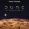

 Dune: Spice Wars (Game Preview)
Detalles
 |
|
| Tiempo de juego | No Jugado |
| Última actividad | Nunca |
| Añadido | 6/12/2022 23:24:05 |
| Modificado | Nunca |
| Estado de finalización | Plan to Play |
| Librería | Xbox |
| Fuente | Xbox Game Pass |
| Plataforma | PC (Windows) |
| Fecha de lanzamiento | 17/11/2022 |
| Puntuación de la Comunidad | |
| Puntuación de la Crítica | |
| Puntuación de usuario | |
| Género | |
| Desarrollador | Shiro Games |
| Editor | Funcom Shiro Games |
| Característica | |
| Enlaces | |
| Tag | Game Pass |
Descripción
This game is a work in progress. It may or may not change over time or release as a final product. Purchase only if you are comfortable with the current state of the unfinished game.
Control the spice, control the universe
A 4X real-time strategy game from the developers of the critically acclaimed Northgard. Set in Frank Herbert’s groundbreaking Dune universe, you must lead your faction and battle for control and dominance over the harsh desert planet of Arrakis.
Spice is the most valuable resource in the universe. The spice extends life, expands consciousness, and makes interstellar travel possible. Found only on Arrakis, it is sought by the most influential forces in the universe. Play as one of several factions, including House Atreides, House Harkonnen, House Corrino, the Smugglers, and the native Fremen, and compete for power over Dune and the spice.
Scan the landscape for wormsign or risk losing your troops and spice harvesters to titanic sandworms who will burst through the dunes to swallow and devour them whole. Crush your opponents in combat, best them through political intrigue, and undermine them with your network of illusive spies.
Frank Herbert’s Dune
Experience the unique Dune universe, one of the most influential sci-fi settings ever created. Lead your faction to victory with iconic characters, such as Duke Leto Atreides, the Baron Vladimir Harkonnen, the Padishah Emperor Shaddam IV, Esmar Tuek, and Liet Kynes. Stay alert as opposing factions seek to gain the upper hand and the planet itself threatens with withering deserts, huge storms, and consuming sandworms.
Forge your own path to victory
Balance open warfare, subterfuge, political influence, and economic supremacy to prevail and gain control over the most important planet in the universe! Use secretive agents to sabotage the plans of your opponents. Vote on political resolutions in the Landsraad to further your strategy.
4X in real-time
Explore Dune with ornithopters to discover resources, villages, and points of interest. Expand with your troops to take control of more and more regions. Exploit the resources through buildings and spice harvesters to dominate the economy. Deploy your spaceships and aircrafts to exterminate your enemies but beware as outright aggression can have high political repercussions.
Choose your faction
Take the path of honor and political power as the respected House Atreides, or choose violence and devious plots as House Harkonnen. Become master of desert survival and guerilla tactics with the native Fremen and gain influence through shady deals and infiltration as the Smugglers, or eliminate any threats to your rule and assert your domination over the spice trade as the imperial House Corrino.
Tailor each faction’s existing strengths and weaknesses by selecting your councilors. With the Atreides’ legendary swordmaster Duncan Idaho at your side, expansion and combat prowess are improved. Gain power over people and information with the aid of Chani Kynes of the Fremen, or overwhelm with military might with Rabban of the Harkonnens. Increase your influence in the Imperium, by involving Corrino’s Princess Irulan in your plots.
Up to 4-player Multiplayer
Band together in 2v2 matches or face each other in a free-for-all of up to four players. Tailor the parameters of your multiplayer match to your preferences, including AI difficulty, map size, victory conditions, and the aggression of sandworms, storms, and Sietches. Team up and try different faction combinations to find synergies and dominate Arrakis.
Full details on the latest status of the game, how you can give feedback and report issues can be found at spicewars.dunegames.com.